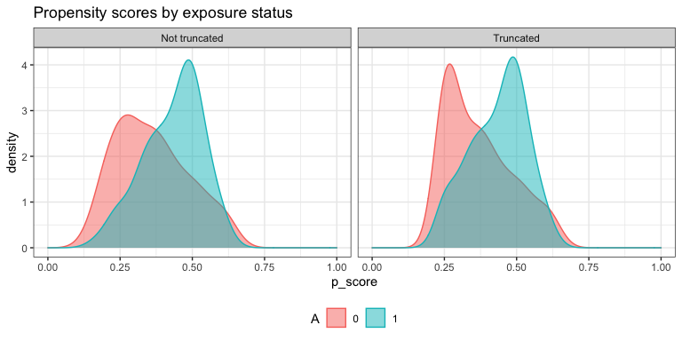
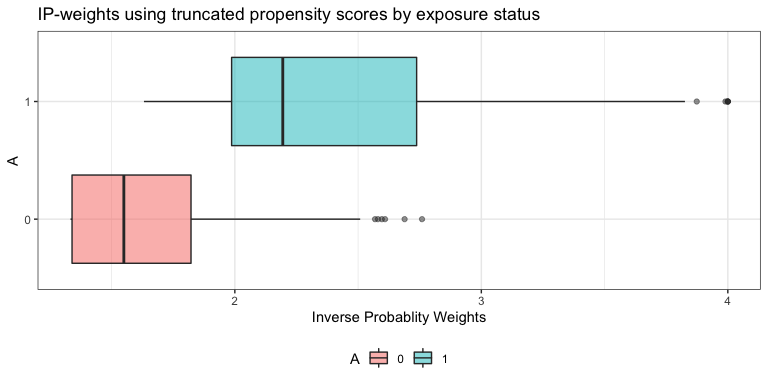

Contributors: Yongqi Zhong, Ashley Naimi, Gabriel Conzuelo, Edward Kennedy
Augmented inverse probability weighting (AIPW) is a doubly robust estimator for causal inference. The AIPW package is designed for estimating the average treatment effect of a binary exposure on risk difference (RD), risk ratio (RR) and odds ratio (OR) scales with user-defined stacked machine learning algorithms (SuperLearner or sl3). Users need to examine causal assumptions (e.g., consistency) before using this package.
If you find this package is helpful, please consider to cite:
@article{zhong_aipw_2021,
author = {Zhong, Yongqi and Kennedy, Edward H and Bodnar, Lisa M and Naimi, Ashley I},
title = {AIPW: An R Package for Augmented Inverse Probability Weighted Estimation of Average Causal Effects},
journal = {American Journal of Epidemiology},
year = {2021},
month = {07},
issn = {0002-9262},
doi = {10.1093/aje/kwab207},
url = {https://doi.org/10.1093/aje/kwab207},
}
install.packages("AIPW")
install.packages("remotes")
remotes::install_github("yqzhong7/AIPW")* CRAN version only supports SuperLearner and tmle. New GitHub versions (after v0.6.3.1) no longer support sl3 and tmle3. If you are still interested in using the version with sl3 and tmle3 support, please install remotes::install_github("yqzhong7/AIPW@aje_version") Please install the Github version (master branch) if you choose to use sl3 and tmle3.
AIPW class: method chaining from R6class)
library(AIPW)
library(SuperLearner)
#> Loading required package: nnls
#> Loading required package: gam
#> Loading required package: splines
#> Loading required package: foreach
#> Loaded gam 1.20.2
#> Super Learner
#> Version: 2.0-28
#> Package created on 2021-05-04
library(ggplot2)
AIPW_SL <- AIPW$new(Y = outcome,
A = exposure,
W = covariates,
Q.SL.library = c("SL.mean","SL.glm"),
g.SL.library = c("SL.mean","SL.glm"),
k_split = 3,
verbose=FALSE)$
fit()$
#Default truncation
summary(g.bound = 0.025)$
plot.p_score()$
plot.ip_weights()
To see the results, set verbose = TRUE(default) or:
print(AIPW_SL$result, digits = 2)
#> Estimate SE 95% LCL 95% UCL N
#> Risk of Exposure 0.44 0.046 0.3528 0.53 118
#> Risk of Control 0.31 0.051 0.2061 0.41 82
#> Risk Difference 0.14 0.068 0.0048 0.27 200
#> Risk Ratio 1.45 0.191 0.9974 2.11 200
#> Odds Ratio 1.81 0.295 1.0144 3.22 200To obtain average treatment effect among the treated/controls (ATT/ATC), statified_fit() must be used:
AIPW_SL_att <- AIPW$new(Y = outcome,
A = exposure,
W = covariates,
Q.SL.library = c("SL.mean","SL.glm"),
g.SL.library = c("SL.mean","SL.glm"),
k_split = 3,
verbose=T)
suppressWarnings({
AIPW_SL_att$stratified_fit()$summary()
})
#> Done!
#> Estimate SE 95% LCL 95% UCL N
#> Risk of Exposure 0.4352 0.0467 0.34362 0.527 118
#> Risk of Control 0.3244 0.0513 0.22385 0.425 82
#> Risk Difference 0.1108 0.0684 -0.02320 0.245 200
#> Risk Ratio 1.3416 0.1858 0.93210 1.931 200
#> Odds Ratio 1.6048 0.2927 0.90429 2.848 200
#> ATT Risk Difference 0.0991 0.0880 -0.07339 0.272 200
#> ATC Risk Difference 0.1148 0.0634 -0.00946 0.239 200You can also use the aipw_wrapper() to wrap new(), fit() and summary() together (also support method chaining):
AIPW_SL <- aipw_wrapper(Y = outcome,
A = exposure,
W = covariates,
Q.SL.library = c("SL.mean","SL.glm"),
g.SL.library = c("SL.mean","SL.glm"),
k_split = 3,
verbose=TRUE,
stratified_fit=F)$plot.p_score()$plot.ip_weights()future.apply and progress bar with progressr
In default setting, the AIPW$fit() method will be run sequentially. The current version of AIPW package supports parallel processing implemented by future.apply package under the future framework. Simply use future::plan() to enable parallelization and set.seed() to take care of the random number generation (RNG) problem:
###Additional steps for parallel processing###
# install.packages("future.apply")
library(future.apply)
#> Loading required package: future
future::plan(multiprocess, workers=2, gc=T)
#> Warning: Strategy 'multiprocess' is deprecated in future (>= 1.20.0)
#> [2020-10-30]. Instead, explicitly specify either 'multisession' (recommended) or
#> 'multicore'. In the current R session, 'multiprocess' equals 'multisession'.
#> Warning in supportsMulticoreAndRStudio(...): [ONE-TIME WARNING] Forked
#> processing ('multicore') is not supported when running R from RStudio
#> because it is considered unstable. For more details, how to control forked
#> processing or not, and how to silence this warning in future R sessions, see ?
#> parallelly::supportsMulticore
set.seed(888)
###Same procedure for AIPW as described above###
AIPW_SL <- AIPW$new(Y = outcome,
A = exposure,
W = covariates,
Q.SL.library = c("SL.mean","SL.glm"),
g.SL.library = c("SL.mean","SL.glm"),
k_split = 3,
verbose=TRUE)$fit()$summary()
#> Done!
#> Estimate SE 95% LCL 95% UCL N
#> Risk of Exposure 0.443 0.0462 0.35284 0.534 118
#> Risk of Control 0.306 0.0510 0.20607 0.406 82
#> Risk Difference 0.137 0.0677 0.00482 0.270 200
#> Risk Ratio 1.449 0.1906 0.99741 2.106 200
#> Odds Ratio 1.807 0.2946 1.01442 3.219 200Progress bar that supports parallel processing is available in the AIPW$fit() method through the API from progressr package:
library(progressr)
#define the type of progress bar
handlers("progress")
#reporting through progressr::with_progress() which is embedded in the AIPW$fit() method
with_progress({
AIPW_SL <- AIPW$new(Y = outcome,
A = exposure,
W = covariates,
Q.SL.library = c("SL.mean","SL.glm"),
g.SL.library = c("SL.mean","SL.glm"),
k_split = 3,
verbose=FALSE)$fit()$summary()
})
#also available for the wrapper
with_progress({
AIPW_SL <- aipw_wrapper(Y = outcome,
A = exposure,
W = covariates,
Q.SL.library = c("SL.mean","SL.glm"),
g.SL.library = c("SL.mean","SL.glm"),
k_split = 3,
verbose=FALSE)
})tmle/tmle3 fitted object as input (AIPW_tmle class)
AIPW_tmle class is designed for using tmle/tmle3 fitted object as input
tmle
require(tmle)
#> Loading required package: tmle
#> Loading required package: glmnet
#> Loading required package: Matrix
#> Loaded glmnet 4.1-6
#> Welcome to the tmle package, version 1.5.0-1.1
#>
#> Major changes since v1.3.x. Use tmleNews() to see details on changes and bug fixes
require(SuperLearner)
tmle_fit <- tmle(Y = as.vector(outcome), A = as.vector(exposure),W = covariates,
Q.SL.library=c("SL.mean","SL.glm"),
g.SL.library=c("SL.mean","SL.glm"),
family="binomial")
tmle_fit
#> Additive Effect
#> Parameter Estimate: 0.12795
#> Estimated Variance: 0.0043047
#> p-value: 0.051161
#> 95% Conf Interval: (-0.00064797, 0.25654)
#>
#> Additive Effect among the Treated
#> Parameter Estimate: 0.13118
#> Estimated Variance: 0.0045329
#> p-value: 0.051365
#> 95% Conf Interval: (-0.00077957, 0.26314)
#>
#> Additive Effect among the Controls
#> Parameter Estimate: 0.12446
#> Estimated Variance: 0.00414
#> p-value: 0.05307
#> 95% Conf Interval: (-0.0016502, 0.25057)
#>
#> Relative Risk
#> Parameter Estimate: 1.4093
#> p-value: 0.064957
#> 95% Conf Interval: (0.97895, 2.0288)
#>
#> log(RR): 0.34308
#> variance(log(RR)): 0.034558
#>
#> Odds Ratio
#> Parameter Estimate: 1.7316
#> p-value: 0.057367
#> 95% Conf Interval: (0.98296, 3.0504)
#>
#> log(OR): 0.54905
#> variance(log(OR)): 0.083461
#extract fitted tmle object to AIPW
AIPW_tmle$
new(A=exposure,Y=outcome,tmle_fit = tmle_fit,verbose = TRUE)$
summary(g.bound=0.025)
#> Cross-fitting is supported only within the outcome model from a fitted tmle object (with cvQinit = TRUE)
#> Estimate SE 95% LCL 95% UCL N
#> Risk of Exposure 0.441 0.0447 0.352877 0.528 118
#> Risk of Control 0.313 0.0503 0.214003 0.411 82
#> Risk Difference 0.128 0.0656 -0.000648 0.257 200
#> Risk Ratio 1.409 0.1814 0.987632 2.011 200
#> Odds Ratio 1.732 0.2814 0.997604 3.006 200tmle3
__New GitHub versions (after v0.6.3.1) no longer support sl3 and tmle3. If you are still interested in using the version with sl3 and tmle3 support, please install `remotes::install_github(“yqzhong7/AIPW@aje_version”)__
remotes::install_github("yqzhong7/AIPW@aje_version")
library(sl3)
library(tmle3)
node_list <- list(A = "sim_A",Y = "sim_Y",W = colnames(eager_sim_obs)[-1:-2])
or_spec <- tmle_OR(baseline_level = "0",contrast_level = "1")
tmle_task <- or_spec$make_tmle_task(eager_sim_obs,node_list)
lrnr_glm <- make_learner(Lrnr_glm)
lrnr_mean <- make_learner(Lrnr_mean)
sl <- Lrnr_sl$new(learners = list(lrnr_glm,lrnr_mean))
learner_list <- list(A = sl, Y = sl)
tmle3_fit <- tmle3(or_spec, data=eager_sim_obs, node_list, learner_list)
# parse tmle3_fit into AIPW_tmle class
AIPW_tmle$
new(A=eager_sim_obs$sim_A,Y=eager_sim_obs$sim_Y,tmle_fit = tmle3_fit,verbose = TRUE)$
summary()Robins JM, Rotnitzky A (1995). Semiparametric efficiency in multivariate regression models with missing data. Journal of the American Statistical Association.
Chernozhukov V, Chetverikov V, Demirer M, et al (2018). Double/debiased machine learning for treatment and structural parameters. The Econometrics Journal.
Kennedy EH, Sjolander A, Small DS (2015). Semiparametric causal inference in matched cohort studies. Biometrika.
Pearl, J., 2009. Causality. Cambridge university press.